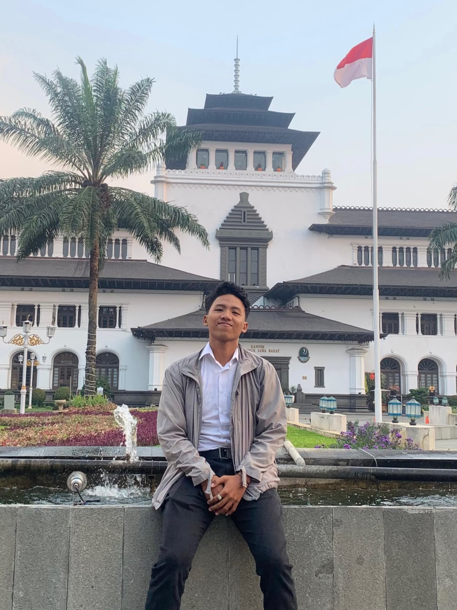

BOGOR, ID
01 PENGEMBANG WEB · BOGOR, INDONESIA
Gerald Dwight Andigha Cardinsyah
Saya suka mencari tahu bagaimana sesuatu bekerja, lalu membangunnya jadi produk digital yang benar-benar berguna.
Full-stack developmentLaravel & PHPInterface design
* Lulusan Ilmu Komputer, UNIDA Bogor. Selalu terbuka untuk tantangan baru.
